6 of the Best Looped Walks on the Wild Atlantic Way
The WILD ATLANTIC WAY
The Wild Atlantic Way serves up 2,500 kilometres of spectacular coastal views as it winds its way along nine of Ireland’s iconic counties. Meandering along Ireland’s West Coast, the Wild Atlantic Way is sure to make your bucket list can’t-miss, once-in-a-lifetime adventures.
If you’re looking for stunning, varied routes to embark on your next hike or walk in Ireland, look no further than the Wild Atlantic Way. We’ve compiled a list of some of the most awe-inspiring looped walks along the route, and, with so many variations, you are sure to find one that fits into your schedule and ability!
1. Ards Forest Park Looped Walk, Co Donegal
Distance: 1.5km – 13km
Time: 1 - 4 hrs
Ards Forest Park covers approximately 480 hectares (1200 acres) and includes a variety of habitats, including sand dunes, beaches, salt marshes, saltwater lakes, rock face and coniferous and deciduous woodlands. It is one of the most diverse forest parks in Ireland.
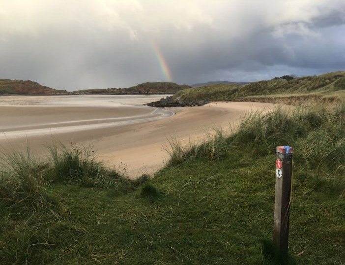The park is also home to a wide selection of animals and birds, a playground and multiple picnic areas. For those interested in human history, there are a number of historical and archaeological features, including the remains of four ring forts together with a holy well and a mass rock.
Re-fuel:We love Shells Café in Standhill. You have the added bonus of being able to watch the surfers as you scoff down your well-earned lunch!
In total, there are nine walking trails to choose from. These include the Salt Marsh Trail (0.5kms, multi-access), the Sand Dune Trail (1km, multi-access), the Nature Trail (1.5km), the Red Trail (13km), the Green Walk (3.5km), the Yellow Walk (4km), the Marine Trail (2.5km), the Heritage trail (5.0kms) and the Binngorm Trail (3.5km)
Trail Start:
Re-fuel:Ards Coffee Tree in the park offers teas, coffees, light snacks and delicious home-baked goodies.
Trail Start:
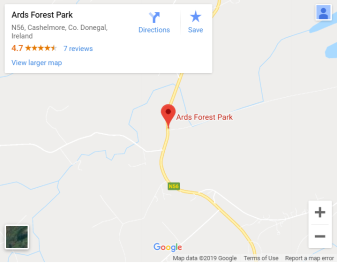2. Luibin Garumna, Connemara
Distance: 9km
Time: 2 hrs
This 9km looped walk takes in coastal paths and quiet country roadways around Garumna Island in the Connemara Gaeltacht. The route is relatively flat, making it an ideal stroll for all members of the family. Although, you should be warned that it can be quite muddy in places so make sure you bring the wellies! The route offers breathtaking views of the Maamturk and Twelve Bens Mountains and right across to the Aran Islands.
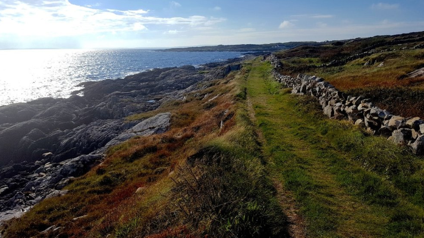Gorumna Island is situated in Ceantar na nOileán in the island region of south Connemara. It is connected to Leitir Móir and the mainland via Carraig a’Logáin Bridge.
Re-fuel: Tigh Lee is a traditional Irish pub on the west of the island serving up simple food along with a very warm welcome.
Trail Start:
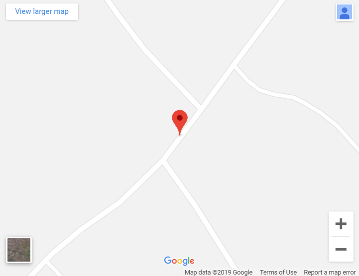3. Kilaspugbrone Loop, Co Sligo
Distance: 6.8km
Time: 2 hrs
This is a stunning coastal walk through the north of the dune system in the busy seaside village of Strandhill. This relatively remote trail brings walkers through a variety of coastal habitats including sand dunes, salt marshes and pine woodland. It passes by Killaspugbrone Church, an early Christian site with historic and legendary associations. The route features some magnificent views of Benbulben and Knocknarea and out over Sligo Bay.
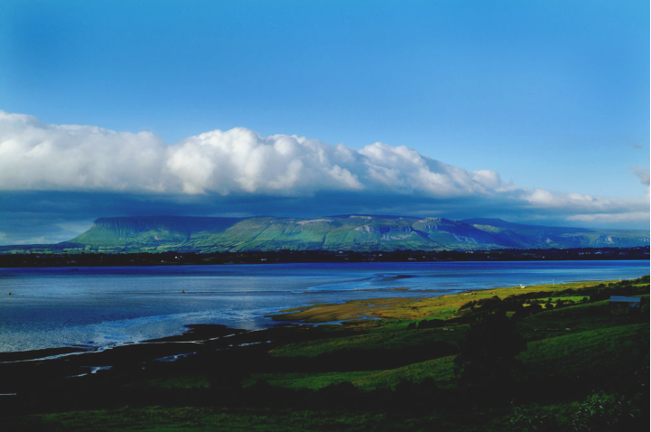Re-fuel:We love Shells Café in Standhill. You have the added bonus of being able to watch the surfers as you scoff down your well-earned lunch!
Trail Start:
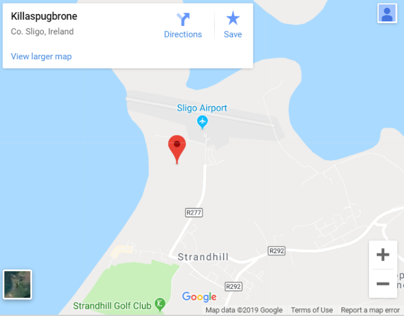4. Caher Valley Loop, Co Clare
Distance: 14.5km
Time: 3 hr 30 min
Starting and finishing at Fanore, this route provides a great day out for those looking for a slightly more challenging walk. This loop climbs gradually up the Caher Valley on a minor road to reach an elevated flat green road which offers some of the most spectacular views across the Burren landscape and right out to the Aran Islands.
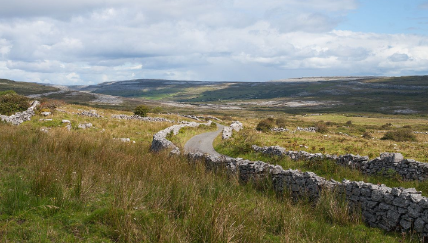Re-fuel:O’Donohues Pub and Vasco Café in Fanore are both guaranteed to hit the spot when it comes to good hearty post-hike grub.
Trail Start:
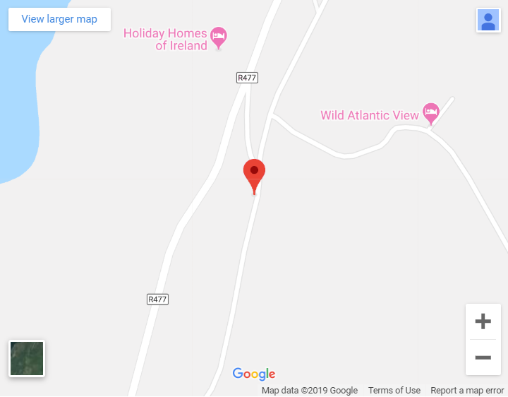5. Bray Head Loop, Co Kerry
Distance: 5km
Time: 1 hr 45 min
This looped walk really packs a punch when it comes to spectacular views. From the carpark, there is a gentle ascent along a wide track the entire way which looks down on Horse and Long Island before you reach an abandoned Signal Tower where the Skelligs can be seen protruding from the ocean in the distance. The route then winds its way along the dramatic cliff tops before descending along the mountain ridge back towards the carpark.
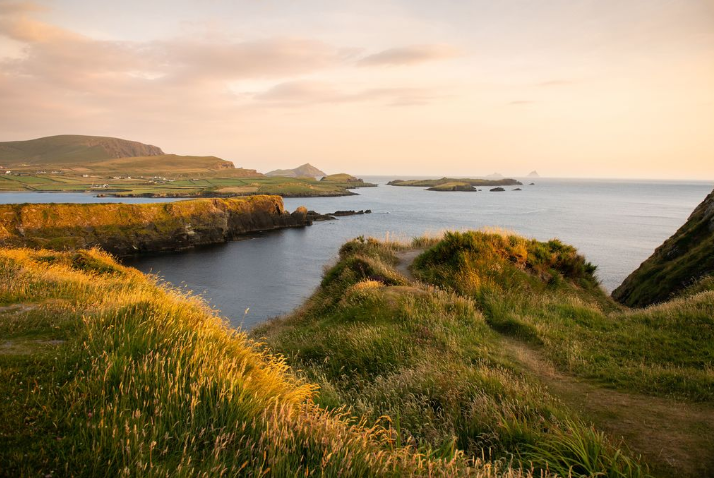Re-fuel: Smugglers Café in Portmagee serves up scrumptious breakfasts, homemade breads and soups and delicious sweet treats.
Trail Start:
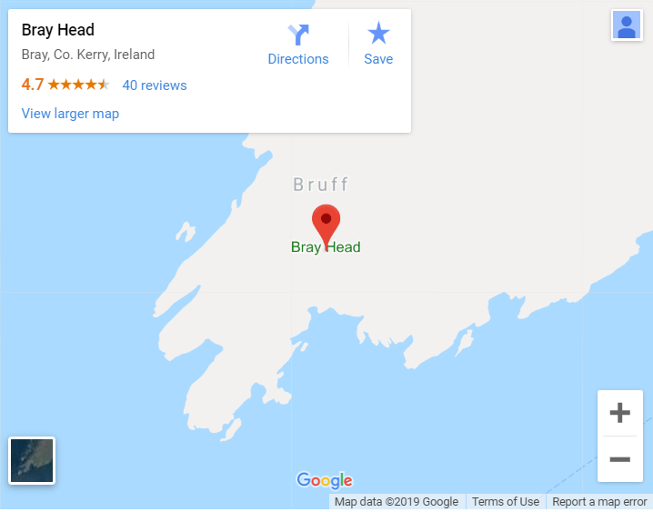6. Sheep’s Head Way, Co Cork
Distance: 88km (lots of shorter loops available)
Time: 3 days in entirety
The Sheep’s Head Way is an 88km circular walking route beginning in the town of Bantry in Co Cork and running out along the north coast of the peninsula to the scenic lighthouse at the very tip before returning along the south side, passing through the pretty villages of Kilcrohane, Ahakista and Durrus.
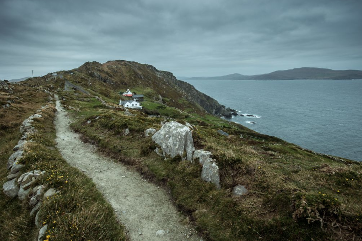The terrain is varied and includes old boreens, open grassy and hearty moorland, field paths, quiet country roads and some short stretches of woodland paths. The remains of an old copper mine, a blowhole, stone circles, standing stones, high cliffs, a Napoleonic signal tower and old churches are some of the varied attractions to be discovered along the way. You might even be lucky enough to spot dolphins and whales off the westernmost tip of the headland.
If 88km seems a little too taxing for you, there are a number of shorter looped walks available. These walks include the Caher Loop (5.4km), the Lighthouse Loop (4km), the Moyny Bridge Walk (2.5k), the Kealkill Loop (11.5km) and the Glounaclohy Walk (9.5km).
Re-fuel: The Gateway in Durrus Village is a quaint café that will perfectly compliment a lovely day had on on Sheep’s Head Way. With great coffee, piping hot tea, baked goods and sandwiches, there is something for everyone. The Old Creamery in Kilcrohane and the Heron Gallery and Cafe in Ahakista are also well worth a visit.
Trail Start:
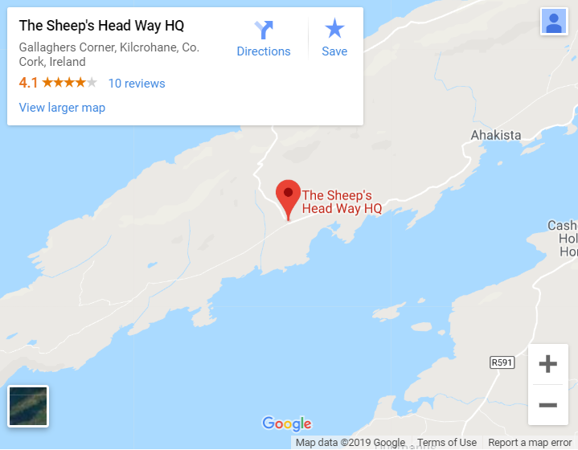